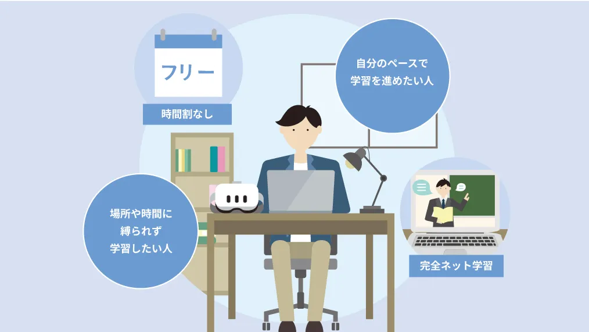
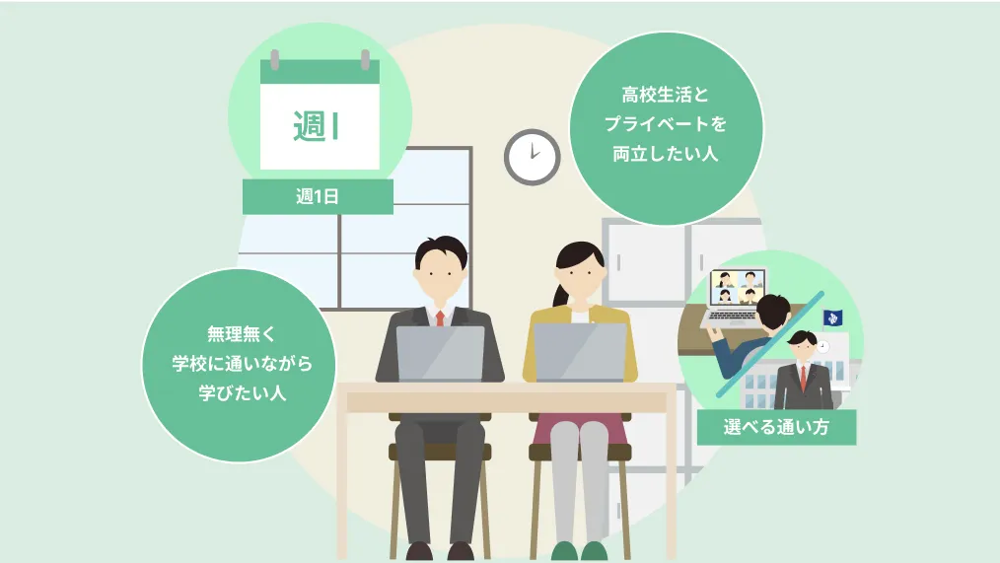
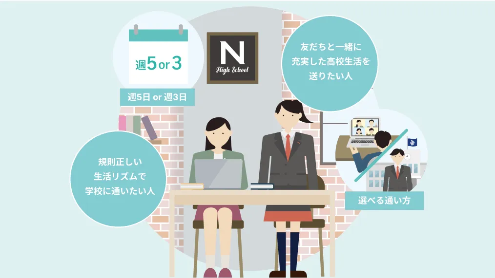
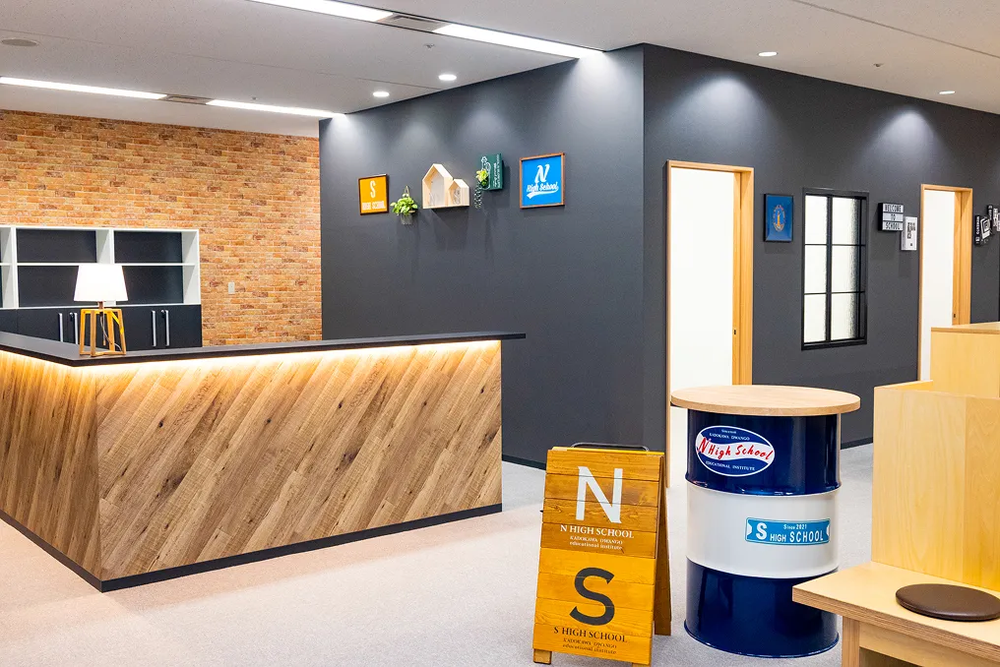
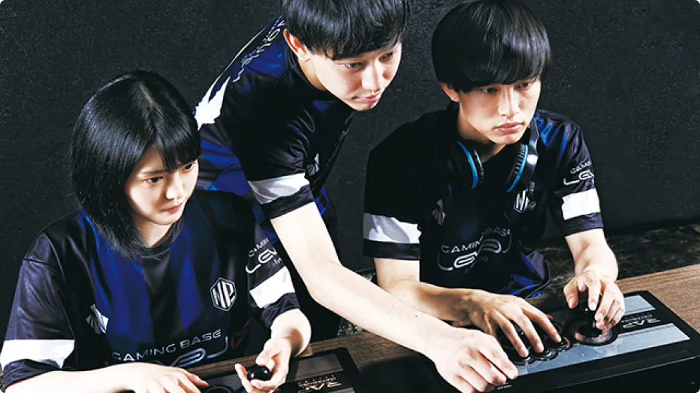
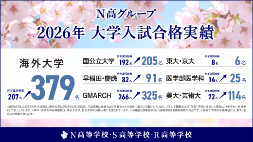
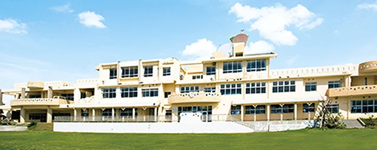
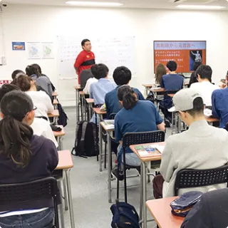

1家中心で学べる？
- N高
- ネットコース（時間割なし。必修授業・レポート・面談はスマホやタブレットでも進められる※）
- クラーク
- 単位修得コース（拠点により月1〜2日の通学）など
- 第一学院
- Mobile HighSchool（オンライン中心のスタイル）
PR本ページはN高グループの資料請求の広告を含みます。内容は2026年9月27日時点で確認した各校の公式情報・公的資料をもとにしています。
中3向け｜高校の学費の見方｜2026年9月版
ネット中心・週1＋・週3・週5など、学び方が変わると必要な費用も変わります。まず学費の見方を整理してから、N高グループ・クラーク記念国際・第一学院の通い方を比べます。
コースによって費用が変わる
ネット中心か、週に何日通うかで年間の負担が変わります。
就学支援金には適用条件がある
授業料は条件を満たすと対象になります。通学のためのコース費用など、対象外の費用もあります。
金額は、通い方と一緒に比べる
「どのくらい通いたいか」と一緒に見ると、自分の場合の費用を考えやすくなります。
たとえばN高グループの場合
通学系（週1＋・週3・週5）は、通信制課程の学費に各コースの学費が加わるしくみです。そのため初年度の実質負担モデルは、コースとキャンパスによって年7.3万円〜102.8万円の幅があります。
※就学支援金の適用を受けた場合（2027年度新入学・所定の条件で就学支援金の適用を受けた場合のモデル）
コース別の金額は、このページの後半「学費は、コースでかなり違います」で見られます。
図は通う日数と費用の関係を示すイメージで、金額の比率ではありません。出典：N高グループ「2027年度 生徒募集要項」
自分の場合の金額は、地域・コース・入学区分で変わります。資料で確認するのが確実です。
コースと学費を資料で確認するN高グループの資料請求ページへ進みます。資料請求は無料で、入学を決めるものではありません。
では、自分はどのくらい通いたいか。
3校の通い方を比べてみます。
高校に入る前から「3年間ずっとこの通い方」と決め切れる人は、あまりいません。だから③を入れました。
※学費・家からの距離・専門分野・入試なども大事です。学費はこのページの後半で紹介します。
①②④⑤は、3校ともそれぞれの形で用意があります。今回はっきり差が出たのは③です。
今回いちばん差が出た項目
※各校の公式サイト（2026年9月27日確認）をもとに整理。コースは地域・キャンパスで異なります。③の「確認できず」は、変更ルールがないという意味ではありません。
※N高の必修授業・レポート・面談はスマホやタブレットでも進められますが、選択する授業などによってはPCが必要になる場合があります。
比べてみて、どうでしたか？ 当てはまるものをタップしてください。
0 / 5 個
チェックすると、ここに整理のヒントが出ます。
0〜2個だった人
今は「通い方」以外に大事なことがありそうです。学費、専門分野、家からの距離など、別の軸でも比べてみてください。
N高も気になるなら、資料を取り寄せて他校と並べてみるN高グループの資料請求ページへ進みます（無料）
3〜5個だった人
「学び方を選べるか」を中心に学校を見ると、候補を絞りやすくなります。
その条件で見ると、N高グループにはネット中心・週1＋・週3・週5の4パターンがあり、決められた時期に変える選択肢もあります。自分の地域でどれが選べるかは、資料で見るのが早いです。
N高グループの資料請求ページへ進みます（無料）
※これは診断ではありません。自分が高校生活で大事にしたいことを整理するためのチェックです。
今回、特に差が出たのは「途中で通い方を変えられるか」
3校とも、家中心の学び方も通う学び方もあります。
違いが出たのは、ネット中心・週1＋・週3・週5の4パターンから学び方を考えられて、変えられる時期まで公式に書かれているところです。
中3の今、3年間の過ごし方を全部決めるのは正直難しい。N高グループなら、こんな変え方も選べます。
今
「まずは、家中心で始めたい」

ネットコース時間割なし。必修授業・レポート・面談はスマホやタブレットでも進められます（選択する授業などでPCが必要な場合あり）。
慣れたら
「少しだけ、通ってみたい」

週1＋コース週1日の授業に加えて、授業がない平日の放課後もリアルキャンパスに通えます。
もしかしたら
「高校生活を、もっと楽しみたくなった」

週5・週3コース週3か週5で、クラスで学ぶ日を増やせます。
逆に、通ってみて「やっぱり家中心がいい」となったら、ネットコースに戻すこともできます。
※コースは「ネット」「週1＋」「週5・週3」の3つです。通学系（週1＋・週5・週3）はリアルかオンラインのキャンパスを選べます。図：N高グループ公式サイトのコース紹介より
いつでも好きなときに変えられる、ではありません
| ネット → 通学系 | 3カ月ごと |
|---|---|
| 通学系 → ネット | 6カ月ごと |
| 通学日数の変更（例：週1＋→週3） | 3カ月ごと |
通学系コースは定員や選考などの条件があり、学費も変わります。
出典：N高グループ公式「よくある質問」（2026年9月27日確認）
ネット中心で始めて、決められた時期に通う日数を見直せる。
だから、中3の今ぜんぶ決めなくていい。


文化祭／eスポーツ部／農業の職業体験
ネットでもリアルでも参加できる活動があり、2025年度の課外活動への参加は延べ17,239名。
出典：N高グループ公式発表（2026年9月7日・7月9日）。参加者数はN高・S高・R高合計の延べ人数。活動は任意参加。画像：公式サイトより
どのコースでも複数のメンターがつき、学習の進み具合の確認・個人面談・保護者も入る三者面談があります。
出典：N高グループ公式「ネットコース」。面談の回数は資料・説明会で確認を。画像：公式サイトより（イメージ）
2026年3月卒業生の進路決定率
94.24％
N高・S高・R高の合計。分母は2025年度在籍の4月生のうち2026年3月31日付の卒業生11,476人、2026年5月19日時点。大学進学率ではありません。出典：公式「進路実績」

画像：公式サイトより。合格者数はN高・S高・R高合計、申告にもとづく延べ人数（国内2026年5月19日・海外6月3日時点）。
こんな人は、他の学校も一緒に比べた方がいいです。
最初から通学中心で、毎日先生と対面で会う高校生活を送りたい
クラーク記念国際（全日型週5など）も候補です。通学中心の学校と並べて比べると納得して選べます。
先生との相談や進路支援を、特に重視したい
第一学院（フェロー・担任制、進学や専門分野のコース）も候補です。
美容・調理など、特定の専門コースを最優先したい
その分野に強い学校も一緒に確認してください。
N高の強みは「全員に一番合う」ことではなく、ネット中心から週5まで、通い方の幅が広いこと。
その幅が自分に必要かどうかで判断すればOKです。


スクーリング（学校で受ける授業）はどのコースでも毎年あります。目安は1・3年次が年7〜8日、2年次が年8〜10日（テスト含む）。
N高の本校スクーリングは沖縄伊計本校で標準4泊5日、在学中に原則1回以上。交通費・宿泊費は別です。
裏を返せば、先生や同級生と直接会う日があるということです。
出典：N高グループ公式「スクーリングについて」。画像：N高グループ公式サイトより
2027年度新入学の、初年度の実質負担モデルです。
| コース | オンライン キャンパス | リアル キャンパス |
|---|---|---|
| ネット | 7.3万円 | |
| 週1＋ | 28万円 | 36.8万円 |
| 週3 | 55.6万円 | 80.3万円 |
| 週5 | 70万円 | 102.8万円 |
※就学支援金の適用を受けた場合（2027年度新入学・所定の条件で就学支援金の適用を受けた場合のモデル）
週1＋・週3・週5の追加コース費用は、就学支援金の対象外です。通信制課程の授業料は、条件を満たす場合に就学支援金の対象となります。
週1＋・週3・週5のコースでは、指定のパソコン（MacBook Air、約16万円）も必要です。
出典：N高グループ「2027年度 生徒募集要項」。モデル金額で、履修単位・支援金の審査・交通費などで変わります。
あわせて知っておきたいこと
出典：N高グループ公式「入学案内」「よくある質問」「必修授業」
今ここで、N高に決める必要はありません。
ただ、中3など、2027年4月の新入学を考えているなら、学校選びの時期はもう始まっています。
N高グループ 2027年4月新入学の出願期間
第1期：2026年9月17日〜10月20日
第2期以降の出願期間もあります（第4期は2027年2月9日まで）。
※コースによっては、キャンパスの定員状況により途中で募集を停止する場合があります。転入・編入は別の扱いです。出典：N高グループ公式「入学案内」（新入学、2026年9月27日確認）。最新の日程は資料・公式サイトで確認してください。
締切に合わせて急ぐ必要はありません。ただ、学校選びはたいていこう進みます。
1つずつ進めると、意外と時間がかかります。だから今は「決める」のではなく、比較材料を先に持っておくくらいでちょうどいいです。見て違うと思ったら、候補から外せばOKです。
画像：N高グループ公式サイトより（学校案内・生徒募集要項）。同封物は時期により変わる場合があります。
クラークや第一学院も気になるなら、同じように資料を取り寄せて並べるのが一番確実です。
入学を決めるためではなく、比べるための資料
学費・コースを資料で確認するN高グループの資料請求ページへ進みます